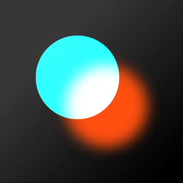
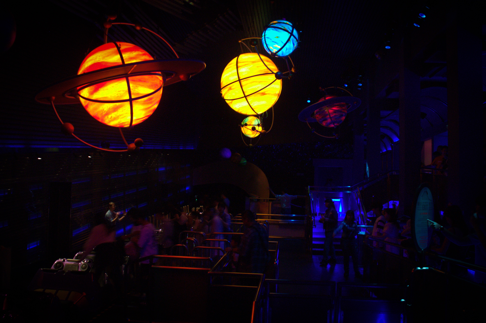
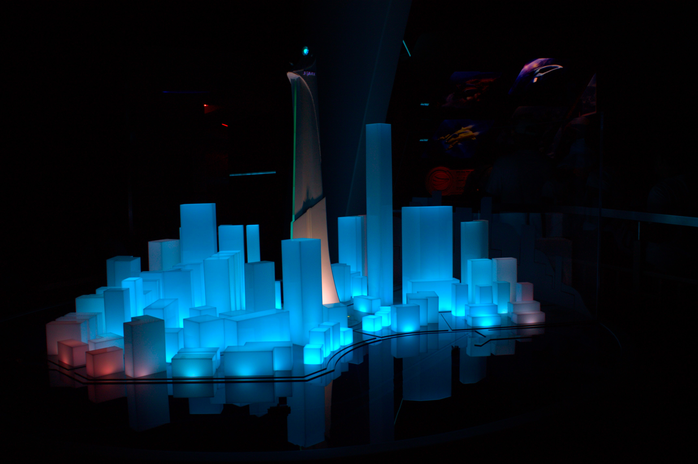
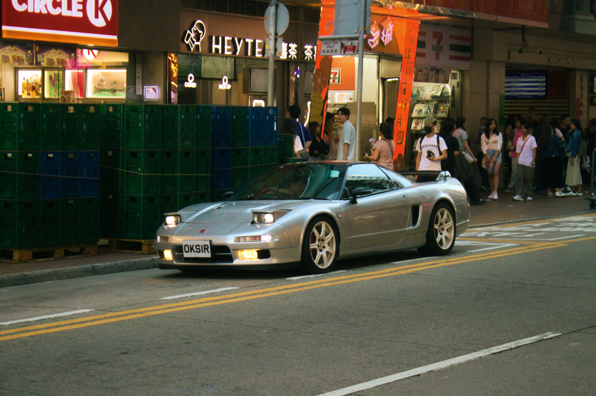
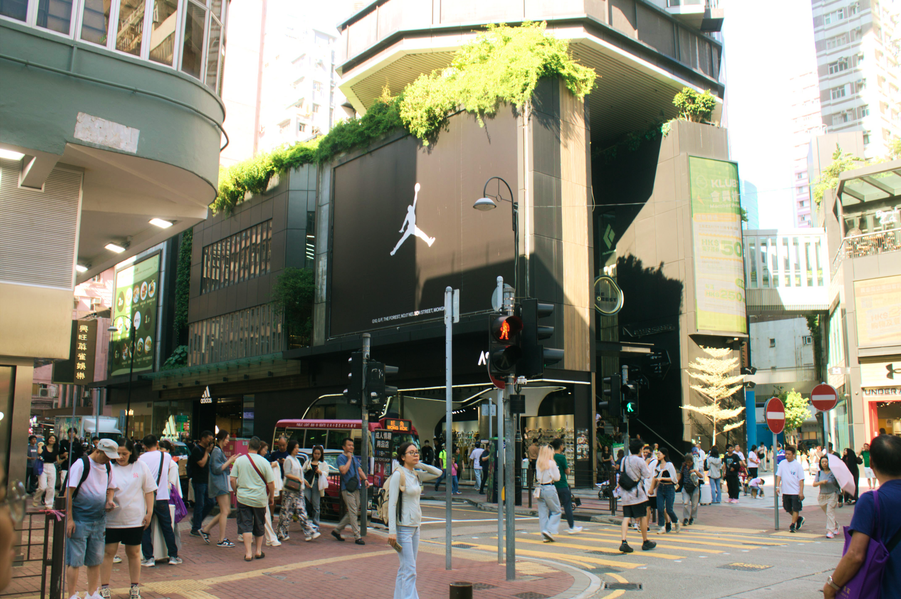
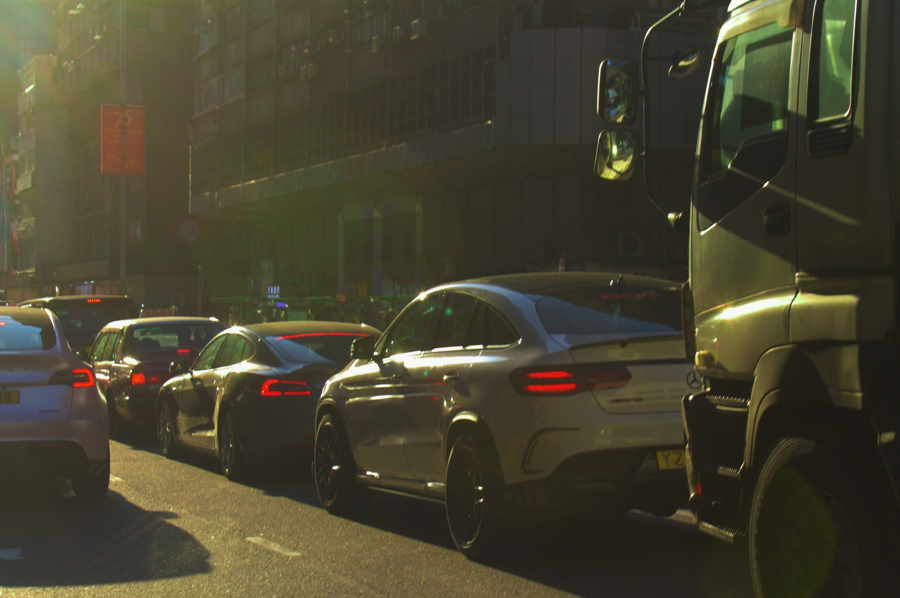
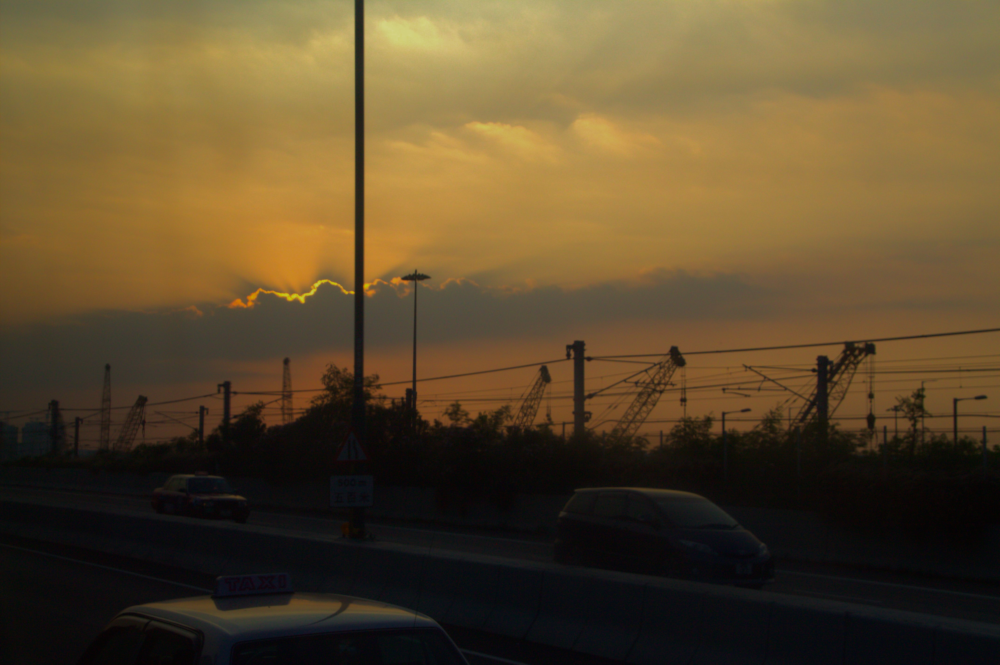
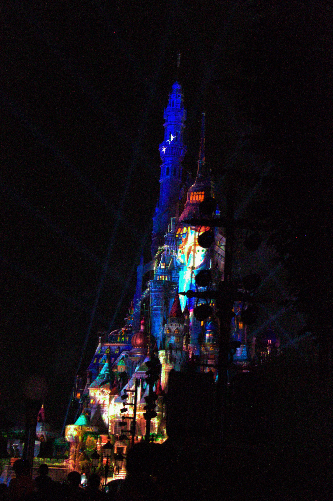
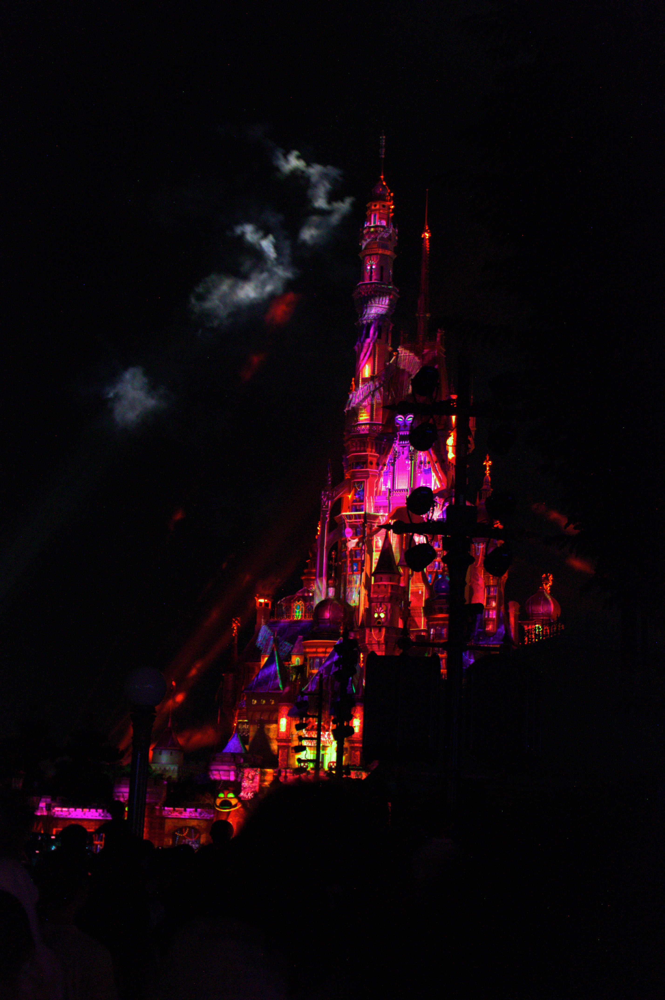

Top Shots
Editing Software: Polarr Pro Photo Editor

Here are some of my best shots taken with my Canon EOS 1100D. Click on the images to view.

- Date Taken: 05-10-2024[09:44]
- ISO Speed: ISO-500
- F-Stop: f/5.6
- Exposure Time: 1/80 sec
- Exposure Bias: -1 step
- Focal Length: 41mm

- Date Taken: 02-10-2024[19:39]
- ISO Speed: ISO-800
- F-Stop: f/3.5
- Exposure Time: 1/30 sec
- Exposure Bias: -5 step
- Focal Length: 20mm

- Date Taken: 05-10-2024[09:05]
- ISO Speed: ISO-3200
- F-Stop: f/5.6
- Exposure Time: 1/13 sec
- Exposure Bias: -1 step
- Focal Length: 18mm

- Date Taken: 05-10-2024[09:50]
- ISO Speed: ISO-500
- F-Stop: f/5.6
- Exposure Time: 1/40 sec
- Exposure Bias: -1 step
- Focal Length: 20mm

- Date Taken: 04-10-2024[14:32]
- ISO Speed: ISO-800
- F-Stop: f/5.6
- Exposure Time: 1/60 sec
- Exposure Bias: 0 step
- Focal Length: 55mm

- Date Taken: 04-10-2024[12:43]
- ISO Speed: ISO-100
- F-Stop: f/5
- Exposure Time: 1/50 sec
- Exposure Bias: 0 step
- Focal Length: 20mm

- Date Taken: 04-10-2024[14:27]
- ISO Speed: ISO-100
- F-Stop: f/9
- Exposure Time: 1/160 sec
- Exposure Bias: 0 step
- Focal Length: 47mm

- Date Taken: 07-10-2024[15:07]
- ISO Speed: ISO-100
- F-Stop: f/5.6
- Exposure Time: 1/1000 sec
- Exposure Bias: -1/3 step
- Focal Length: 35mm

- Date Taken: 05-10-2024[18:34]
- ISO Speed: ISO-3200
- F-Stop: f/5.6
- Exposure Time: 1/10 sec
- Exposure Bias: -1 step
- Focal Length: 46mm

- Date Taken: 02-10-2024[18:43]
- ISO Speed: ISO-3200
- F-Stop: f/5.6
- Exposure Time: 1/8 sec
- Exposure Bias: -1.3 step
- Focal Length: 37mm